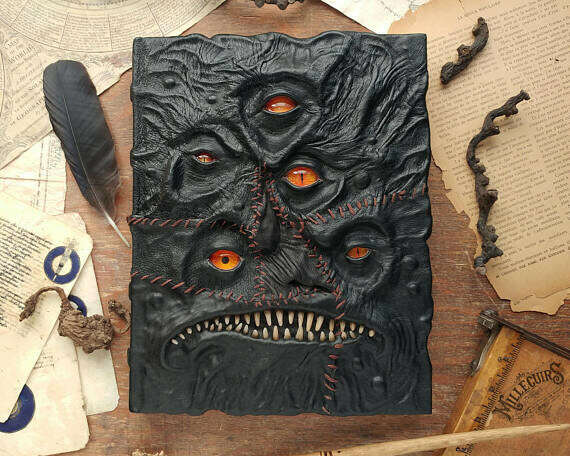
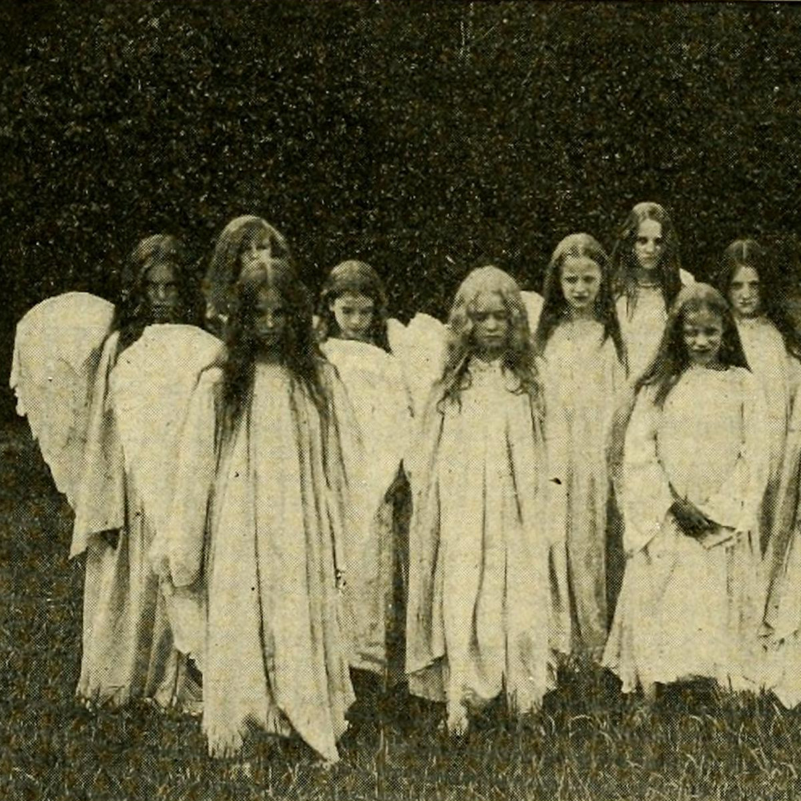
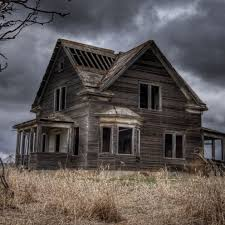
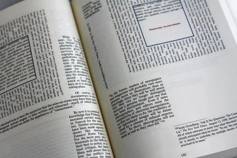

Entrance Hall
Welcome, traveler. Step carefully — some knowledge was never meant to be found.
Danger: Beware of the unknown that lies within and all it speaks!Guestbook of the Forgotten
Will you sign your name... and be remembered?
Forbidden Wing
Ancient books locked away for a reason. Dare you open them?

A leather-bound book stitched together with sinew. It details a sleepy village where the earth itself begins to chew on the buildings at night. The last page is wet.
The Teeth Beneath
Author: Unknown
A leather-bound book stitched together with sinew. It details a sleepy village where the earth itself begins to chew on the buildings at night. The last page is wet.
Whispers in the Binding
By: Eliza Nox (Missing, 1883)
A diary from a librarian who went mad cataloging books that whispered when shelved. Her notes grow increasingly panicked, and the margins seem to rewrite themselves.
The Candle That Burns Black
By: Rev. Dorian Valt
A ritual manual that describes a candle which, when lit, slowly consumes the one who lit it — backwards through their own memories.
Echo Room
Listen closely... the walls remember what was whispered long ago.
Room 404 (Live Recording)
A distorted voice tries to describe a room that doesn’t exist in any known building — the more they speak, the more their speech loops, stutters, and changes languages. Near the end, it starts speaking as you.

A cassette recovered from an abandoned asylum — it begins with a children’s choir singing sweetly, but halfway through the melody collapses into shrieks, reversed lyrics, and banging doors in the background.
Found Tape: The Hollow Choir
A cassette recovered from an abandoned asylum — it begins with a children’s choir singing sweetly, but halfway through the melody collapses into shrieks, reversed lyrics, and banging doors in the background.
The Calling Voice
An interview with a man who claims the moon speaks to him at night. You hear his words echo faintly behind his voice — but with a delay, like something’s repeating him from behind.
Archive of the Missing
Scattered pages and forgotten tomes await your discovery.
The Final Chronicle of Hollow's End
- ♦ Only Pages 1, 2, and 13 remain.
- ♦ A corrupted sermon preaching the arrival of "the second sowing," where the harvest will bleed.
- ♦ Missing pages are rumored to explain how to survive it — but no one has ever found them.

The Final Chronicle of Hollow's End
- ♦ Describes the downfall of a town that disappeared overnight.
- ♦ Last five chapters missing — the story cuts off mid-sentence: "And when the clock struck thirteen—"

The Mirror Codex
- ♦ A "reverse" book — all text is mirrored.
- ♦ 60% of the book is missing, with footnotes hinting that "reading the full reflection" lets something see you back
Librarian's Notes
The caretaker's words grow unstable. Something is coming...
Something is coming...
Something is coming...
Something is coming...
Something is coming...
Something is coming...
Something is coming...
Something is coming...
Something is coming...